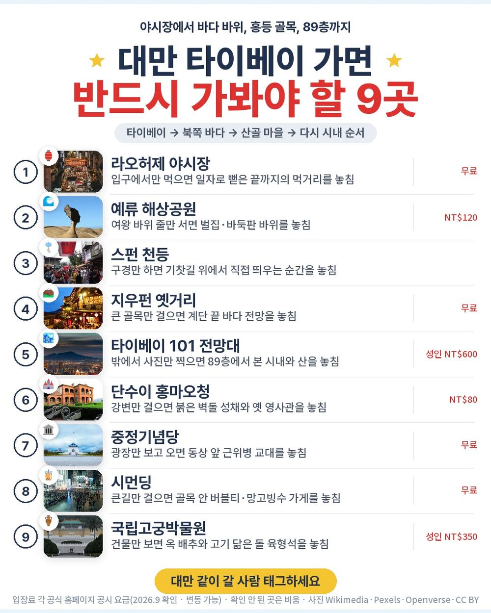
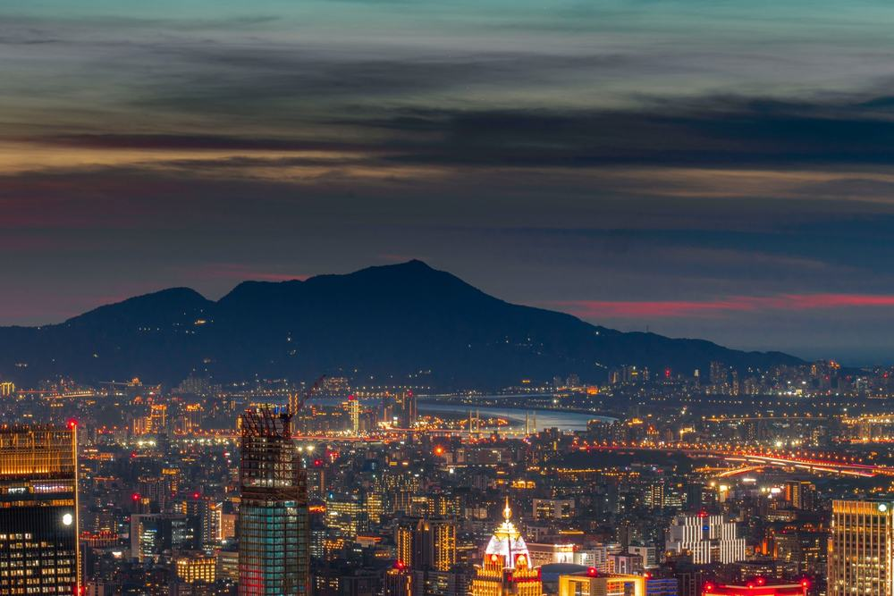
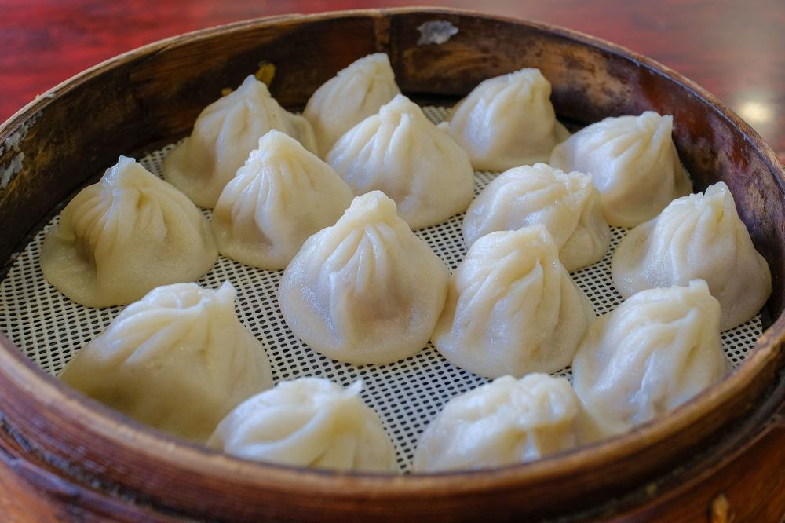
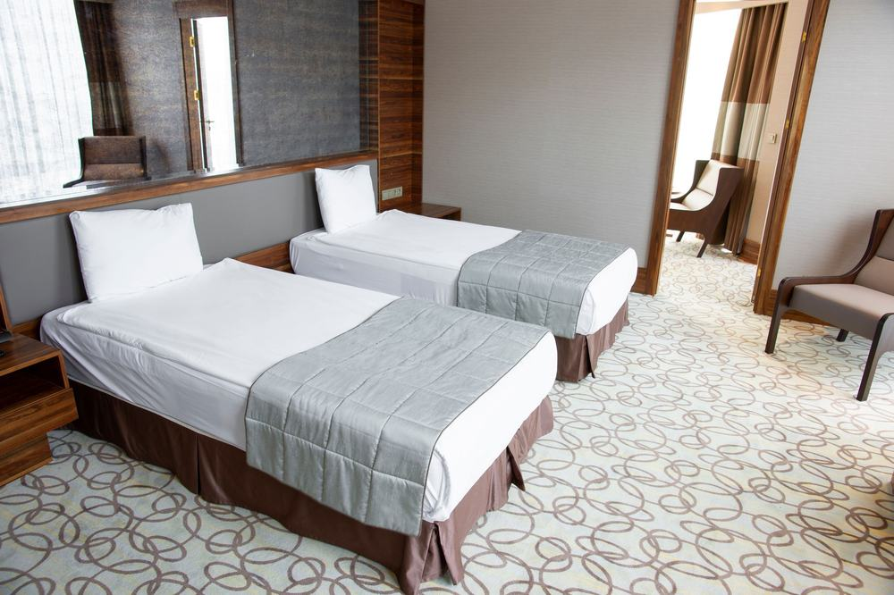
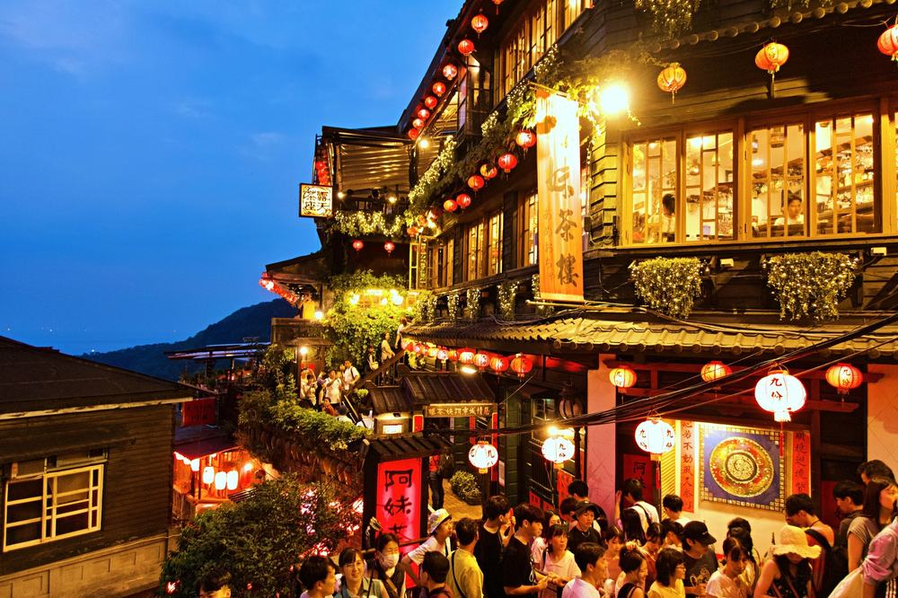
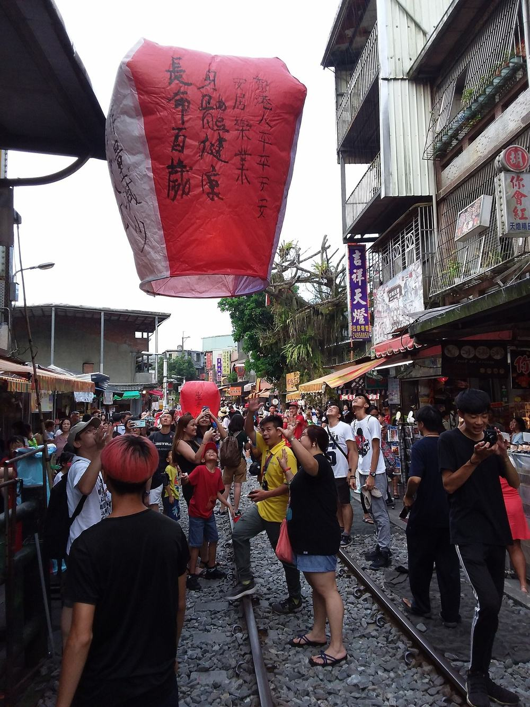
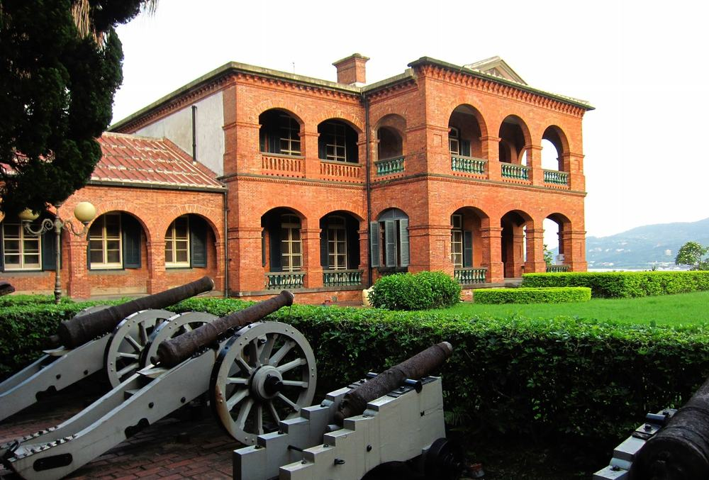

참좋은여행 대만 패키지 여행 74만 9천원, 쇼핑 0회인데 101 전망대·천등까지 들어간 4일

대만을 알아보다 보면 쇼핑센터 두세 곳이 끼어 있는 상품이 대부분임. 부모님 모시고 가려니 그 시간이 아까웠음.
그러다 참좋은여행 노쇼핑 상품이 눈에 들어옴. 74만 9천원에 쇼핑 0회, 101빌딩 89층 전망대와 스펀 천등(4인 1개)까지 들어 있음. 예류·지우펀·단수이·고궁박물관도 다 들어감. 대신 공항이 타이중이라 타이베이까지 버스를 오래 탐.
결론 — 추천. 쇼핑 없이 예류·스펀·지우펀·101 전망대·단수이·중정기념당·시먼딩·고궁박물관을 다 넣은 일정임. 다만 공항↔타이베이 버스 2시간 30분이 힘든 분, 호텔이 시내 한복판이어야 하는 분, 기내식이 꼭 있어야 하는 분은 아님.
74만 9천원이 어디에 들어갔는지, 현지에서 더 내는 돈은 얼마인지 원문을 하나씩 뜯어봤음.
| 항목 | 내용 |
|---|---|
| 가격 | 1인 749,000원 (성인 · 11월 출발 기준) |
| 여행사 | 참좋은여행 |
| 항공 | 트리니티항공 직항 · 인천 14:25 → 타이중 16:30 / 타이중 17:30 → 인천 21:10 · 기내식 없음 |
| 숙소 | 시외 준특급 호텔 3박 (2인 1실) · 예정 주도 플라자 호텔 또는 동급 · 출발 2일 전 문자 안내 |
| 일정 | 3박 4일 · 전용 버스 · 한국어 가이드 · 식사 9회 · 쇼핑 0회 · 선택관광 발마사지(안 하면 자유시간) |
| 가는 곳 | 라오허제 야시장 · 예류 해상공원 · 스펀 천등 · 지우펀 옛거리 · 101빌딩 전망대 · 단수이(홍마오청) · 중정기념당 · 시먼딩 · 국립고궁박물관 |
▶ 내 출발일 오늘 기준 요금 확인 (제휴 링크 · 예약 시 수수료를 받으며 가격은 같습니다)
| 순서 | 다루는 것 | 한 줄 결론 |
|---|---|---|
| 1 | 구성 뜯어보기 | 노쇼핑, 현지 추가금은 가이드 경비 40달러 |
| 2 | 일정 살펴보기 | 2일차가 가장 많이 걷고 가장 많이 봄 |
| 3 | 자유여행 VS 패키지 | 직접 짜면 72만원 | 직접 짜면 8만원쯤 덜 들지만 가이드·버스가 없음 |
1. 구성 뜯어보기
요약 — 타이중 왕복 직항·준특급 3박·식사 9회·관광 입장·101 전망대·천등·망고빙수와 버블티·가이드·전용 버스·보험이 들어 있음. 쇼핑은 0회, 현지에서 더 내는 건 가이드 경비 1인 40달러임.
1-1. 74만 9천원에 들어 있는 것

포함 항목을 정리하면 이럼.
- 트리니티항공 인천–타이중 직항 왕복 + 유류할증료·세금
- 시외 준특급 호텔 3박 (2인 1실, 세 밤 같은 호텔)
- 식사 9회 (딤섬 · 우육면 · 대만식 샤브샤브 · 한식 불고기 포함)
관광과 간식은 이렇게 들어 있음.
- 예류 해상공원 · 스펀 천등 날리기(4인 1개) · 지우펀 옛거리 · 라오허제 야시장
- 101빌딩 89층 전망대(상품 안내상 옵션가 US$35 상당) · 시먼딩 관광과 자유 1시간(US$20 상당)
- 단수이(홍마오청·옛거리·진리대학) · 중정기념당 · 국립고궁박물관 · 망고빙수(2인 1개)·버블티(1인 1잔) · 여행자보험
이 상품의 차별점은 쇼핑센터를 한 곳도 넣지 않고 그 시간을 명소로 채웠다는 것임. 101 전망대와 시먼딩처럼 다른 상품에선 옵션으로 파는 것도 값 안에 있음.
출발일별 요금 확인하기
https://naver.me/5c87AkaR
1-2. 식사 아홉 번

식사는 9회임. 2·3·4일차 아침은 호텔 조식, 점심·저녁은 현지식이고 그 안에 딤섬·우육면·대만식 샤브샤브·한식 불고기가 들어 있음.
비는 끼니는 1일차 점심과 4일차 저녁 두 번임. 트리니티항공은 기내식이 없어서 그 두 끼는 공항에서 챙기면 됨.
1-3. 호텔

세 밤 다 같은 시외 준특급 호텔임. 예정은 주도 플라자 호텔 또는 동급이고, 출발 2일 전까지 문자로 확정됨. 침대는 트윈이나 더블 중 체크인 때 정해져 미리 고를 수 없음.
혼자 방을 쓰면 210,000원이 붙음. 겨울엔 대만 호텔 난방이 약한 편이라 따뜻한 잠옷을 챙기는 게 좋음.
1-4. 현장에서 더 낼 돈
| 항목 | 금액 | 비고 |
|---|---|---|
| 가이드·기사 경비 | 약 110,000원 | 1인 40달러 × 2인 (성인·아동 동일) |
| 선택관광 | 0원 | 발마사지 30분 US$30은 고르는 사람만, 안 하면 자유시간 |
| 식사 자유식 | 개인 | 1일차 점심 · 4일차 저녁 (기내식 없음) |
| 합계 (2인) | 약 110,000원 | 상품가 149만 8천원 + 11만원 = 약 161만원 |
두 사람이면 약 161만원, 한 사람으로 치면 약 80만원임. 발마사지를 고르면 두 사람에 60달러가 더해짐.
1절 자주 나오는 질문
Q. 쇼핑은 정말 없나요?
A. 없음. 쇼핑 항목이 비어 있는 노쇼핑 상품이고, 그 시간에 시먼딩 자유 1시간 같은 일정이 들어 있음.
Q. 가이드 경비는 따로 내나요?
A. 냄. 1인 40달러를 현지에서 냄. 상품가 밖이고 성인·아동 같음.
Q. 101빌딩은 전망대까지 올라가나요?
A. 올라감. 일정표에 101 전망대가 적혀 있고, 초고속 엘리베이터로 89층 전망대에 올라 시내를 내려다봄.
2. 일정 살펴보기
요약 — 1일차 오후 타이중 도착 뒤 버스로 타이베이·라오허제 야시장, 2일차 예류·스펀·지우펀·101 전망대, 3일차 단수이·중정기념당·시먼딩, 4일차 고궁박물관 뒤 타이중에서 귀국.
2-1. 하루하루 어디를 가나

| 일차 | 가는 곳 | 식사 | 숙소 |
|---|---|---|---|
| DAY 1 | 인천 14:25 출발 → 타이중 16:30 도착 → 타이베이로 이동(약 2시간 30분) → 라오허제 야시장 → 호텔 | 석 현지식 | 준특급 호텔 |
| DAY 2 | 예류 해상공원 → 스펀 천등 → 지우펀 옛거리 → 101빌딩 전망대 | 조 호텔식 · 중 현지식 · 석 현지식 | 준특급 호텔 |
| DAY 3 | 단수이(홍마오청·옛거리·진리대학) → 중정기념당 → 시먼딩 자유 1시간 → 선택 발마사지 또는 자유시간 | 조 호텔식 · 중 현지식 · 석 현지식 | 준특급 호텔 |
| DAY 4 | 국립고궁박물관 → 타이중으로 이동(약 2시간 30분) → 타이중 17:30 출발 → 인천 21:10 도착 | 조 호텔식 · 중 현지식 | — |
| 일차 | 버스 이동 | 걷기 | 포함 식사 |
|---|---|---|---|
| DAY 1 | 약 2.5시간 | 보통 | 석 현지식 |
| DAY 2 | 약 3시간 | 중상 | 조 호텔식 · 중 현지식 · 석 현지식 |
| DAY 3 | 약 1.5시간 | 보통 | 조 호텔식 · 중 현지식 · 석 현지식 |
| DAY 4 | 약 2.5시간 | 보통 | 조 호텔식 · 중 현지식 |
| 합계 | 약 9.5시간 | - | 9끼 (현지식 6 · 호텔식 3) |
요약 — 버스 이동은 4일 동안 약 9.5시간, 포함 식사는 9끼(현지식 6 · 호텔식 3)임. 가장 많이 걷는 날은 DAY 2임.
2-2. 2일차 — 바다 바위, 천등, 홍등, 89층

아침엔 예류 해상공원임. 비와 바람과 파도가 깎은 바위들 가운데 이집트 왕비 옆얼굴을 닮았다는 여왕 바위가 가장 유명함.
이어서 스펀에서 기찻길 위에 서서 천등을 띄움. 천등은 4인에 1개 포함이라 가족 넷이면 한 면씩 소원을 쓰면 됨. 오후엔 지우펀 옛거리를 걷고, 마지막으로 101빌딩 89층 전망대에 오름.
지우펀은 계단 골목이라 편한 신발이 좋음. 주말·연휴엔 차량 통제로 시내버스를 약 20분 타고 오를 수 있음.
2-3. 3일차·4일차 — 단수이, 시먼딩, 고궁박물관

3일차 아침은 영화 '말할 수 없는 비밀' 촬영지로 알려진 단수이임. 홍마오청과 옛거리, 진리대학을 봄. 낮엔 높이 70m의 중정기념당, 오후엔 시먼딩에서 자유시간 1시간을 보내고 망고빙수·버블티를 받음.
4일차는 자금성 보물 29만 점을 옮겨 온 국립고궁박물관임. 큰 백팩과 물병은 들고 들어갈 수 없음. 점심 뒤 타이중으로 내려가 17:30 비행기를 탐.
2절 자주 나오는 질문
Q. 많이 걷나요?
A. 2일차가 가장 많이 걸음. 지우펀 계단 골목과 예류 바위 산책이 있음. 나머지 날은 버스로 옮겨 다니며 짧게 걷는 편임.
Q. 비행기는 몇 시인가요?
A. 트리니티항공 직항이고 인천 14:25 출발 → 타이중 16:30 도착, 귀국은 타이중 17:30 출발 → 인천 21:10 도착임. 왕복 다 낮 비행기임.
Q. 준비할 건 뭔가요?
A. 원문 안내로 대만은 육류가 든 식품(라면 수프·소시지·육포 등) 반입이 금지이고 벌금이 수백만 원임. 전압은 110V라 멀티 어댑터가 필요하고, 전자 입국신고서는 미리 써야 함. 경비는 미국 달러, 개인 비용은 대만 달러로 환전하라고 안내함.
3. 자유여행 VS 패키지 | 직접 짜면 72만원
요약 — 같은 일정을 직접 짜면 1인 72만원쯤 듦. 패키지는 가이드 경비를 더해 약 80만원이라 8만원쯤 더 듦. 그 차이에 한국어 가이드와 하루짜리 예류·스펀·지우펀 이동이 들어 있음.
3-1. 같은 일정을 직접 짜면

같은 일정을 혼자 짠다고 치고 항목별로 계산해 봄. 11월 출발, 2인 1실 1인분임. 항공 말고는 추정치라 근거 열에 적어 둠.
| 항목 | 금액 | 근거 |
|---|---|---|
| 인천–타이베이 왕복 항공 | 322,500원 | ICN↔TPE 직항 왕복 1인 32만 2천원 (앞으로 두 달 직항 최저 운임 — 하위 25% 값도 튐 · 2026-10-17 마이리얼트립 조회) |
| 준특급 호텔 3박 | 150,000원 | 2인 1실 1인분 (추정) |
| 입장료 | 52,000원 | 101 전망대 NT$600 · 예류 NT$120 · 고궁 NT$350 · 홍마오청 NT$80 (공식 공시 요금 환산 추정) |
| 예류·스펀·지우펀 차량 | 80,000원 | 하루 택시 투어 2인 나눔 (추정) |
| 식사 (점심 3 · 저녁 3) | 90,000원 | 현지식 기준 (추정) |
| 공항 이동 | 15,000원 | 타오위안 공항철도 왕복 (추정) |
| 여행자보험 · 유심 | 15,000원 | 4일 기준 |
| 가이드 | — | 자유여행은 없음 |
| 합계 | 약 724,500원 |
직접 짜실 분은 이 날짜 항공권부터 보세요 — https://myrealt.rip/wHvT1a (마이리얼트립 제휴 링크)
패키지는 749,000원에 가이드 경비 40달러를 더해 약 80만원임.
3-2. 그래서 뭐가 다른가
직접 짜면 8만원쯤 덜 듦. 대신 예류·스펀·지우펀을 하루에 묶으려면 차를 따로 잡아야 하고, 고궁박물관·단수이도 하나씩 찾아가야 함.
- 북쪽 바닷가와 산골 마을을 대중교통으로 하루에 돌기는 빠듯함
- 101 전망대·고궁박물관 표를 하나씩 사야 함
- 식당을 매끼 직접 골라야 함
패키지는 이 전부가 전용 버스 한 대로 붙고, 한국어 가이드가 붙음. 자유여행 계산표에 가이드 행이 비어 있는 게 그 뜻임 — 0원이 아니라 살 수 없는 것임.
3-3. 어느 쪽이 맞나
| 자유여행이 맞음 | 패키지가 맞음 |
|---|---|
| 타오위안 공항으로 바로 들어가고 싶음 | 쇼핑센터 없이 핵심만 돌고 싶음 |
| 시내 한복판 호텔에 묵고 싶음 | 예류·스펀·지우펀을 하루에 묶고 싶음 |
| 한 곳에 오래 머물고 싶음 | 부모님과 길 찾기 걱정 없이 돌고 싶음 |
| 식당을 직접 고르고 싶음 | 101 전망대·고궁박물관까지 맡기고 싶음 |
3절 자주 나오는 질문
Q. 자유여행이 더 싸지 않나요?
A. 계산해 보면 자유여행이 약 72만원, 패키지가 경비까지 약 80만원임. 8만원쯤 차이인데 그 안에 가이드와 전용 버스가 들어 있음.
Q. 왜 타이중 공항인가요?
A. 이 상품은 트리니티항공 인천–타이중 직항을 씀. 공항에서 타이베이까지 전용 버스로 약 2시간 30분이고 가이드가 함께 탐.
Q. 출발이 확정된 상품인가요?
A. 최소 출발 인원이 10명이고 다른 상품 손님과 현지에서 합류해 진행함. 출발 여부는 일주일 전까지 알려준다고 안내함.
마무리
정리하면 이럼.
추천함. 74만 9천원에 쇼핑 없이 예류·스펀 천등·지우펀·101 전망대·단수이·중정기념당·시먼딩·고궁박물관, 식사 9회, 망고빙수와 버블티까지 들어 있음. 현지에서 더 내는 건 가이드 경비 1인 40달러임.
이런 분은 고르면 안 됨. 공항↔타이베이 버스 2시간 30분이 힘든 분, 호텔이 시내 한복판이어야 하는 분, 기내식이 꼭 있어야 하는 분.
| 맞는 사람 | 안 맞는 사람 |
|---|---|
| 쇼핑센터 없이 대만 핵심만 보고 싶음 | 버스 2시간 30분이 힘듦 |
| 예류·천등·지우펀·101을 하루에 | 호텔이 시내 한복판이어야 함 |
| 고궁박물관·단수이·시먼딩까지 다 | 기내식이 꼭 있어야 함 |
걸리는 점이 있긴 한데 상품 흠이라기보다 맞는 사람과 안 맞는 사람을 가르는 조건에 가까움.
오늘 기준 출발일별 요금 보기
https://naver.me/5c87AkaR
함께 보면 좋은 글
노랑풍선 부산출발 다낭 호이안 패키지 여행 54만 9천원, 옵션 0개 가이드 경비 0원 진짜일까
https://blog.naver.com/robotnady10/224443309947
노랑풍선 부산출발 북해도 패키지 여행 102만원대, 같은 북해도 4일 164만원대 상품과 뭐가 다를까
https://blog.naver.com/robotnady10/224442162807
이 글에는 네이버·마이리얼트립 제휴 링크가 포함되어 있으며, 링크를 통해 예약하시면 일정 수수료를 받습니다. 가격은 동일합니다. 가격과 구성은 2026년 10월 17일 확인 기준이며 출발일에 따라 달라질 수 있습니다.
▶ 이 상품, 영상으로 보기 (유튜브)
사진 출처 (저작자 · 라이선스):
TW 台灣 Taiwan 新台北 New Taipei 平溪區 Pingxi District 十分老街 風景區 Shi — CC BY-SA 4.0 (Wikimedia Commons) 원본

Former British Consular Residence - Flickr - rvandermaar — CC BY 2.0 (Wikimedia Commons) 원본

그 밖의 사진: Pexels
쇼츠·클립 영상과 사진:
空拍 野柳地質公園 | Drone Footage - Yehliu Geopark | Trave — Travel Kevin BKH (YouTube, CC BY) 원본